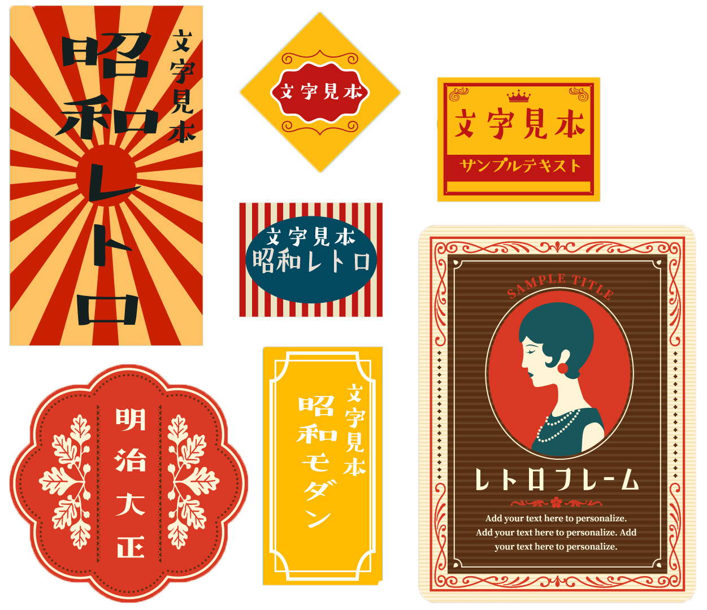

04.
架空カフェ DIGICAFE
バナー広告
2021.05
-
SKILLS
Illustrator / Photoshop
-
SCOPE
ALL
-
CONTENTS
300x25, 300x50, A4 poster

HINAKO HASEBE - WORKS
04.
2021.05
Illustrator / Photoshop
ALL
300x25, 300x50, A4 poster
架空カフェ、期間限定ドリンクのバナー広告という課題で作成しました。期間が夏前だったので、ドリンクはクリームソーダにしました。課題は300×250のバナーでしたが、ポスターや、横長のバナーも展開して作成しました。
あまり深く考えずに、キャッチーでインスタ映えしそうなドリンク、ということでクリームソーダにしました。クリームソーダは、日本のレトロな風情を感じさせる印象がありますが、その由来を調べてみたところ、その歴史は明治時代に遡るそうです。若者にとっては、レトロで可愛い印象、昭和、大正生まれの方にとっては子供時代を思い出させる懐かしい印象で今でも親しまれています。 それらの印象を表現するため、今回の課題では、明治、昭和時代の広告やマッチのパッケージなどを参考に作成しました。
サイトの目的である、サービスの認知、予約への誘導のため、ファーストビューに専用ページへのボタンを配置。また、一番最初のコンテンツに車ごとレンタルの簡単な説明を用意し、おすすめやランキングなど、商品紹介のコンテンツを複数配置しました。
複雑な色の表現ができない時代の、単純な色使いを心がけました。背景は夏の青空の様な、鮮やかな水色をベタ塗りにし、色数は少なくしました。アクセントカラーとして背景の水色と対照的な朱色を使いました。
